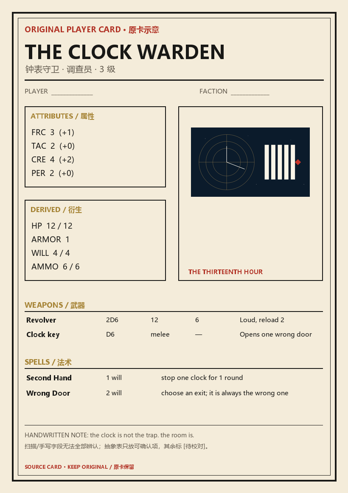

结构化字段进表格；原卡的特殊版式不硬拆，留到附录核对。
| 属性 | 缩写 | 数值 | 修正 |
|---|---|---|---|
| 强横 | FRC | 3 | +1 |
| 战术 | TAC | 2 | +0 |
| 创造 | CRE | 4 | +2 |
| 感知 | PER | 2 | +0 |
| 项目 | 当前 | 上限/备注 |
|---|---|---|
| 生命 HP | 12 | 12 |
| 护甲 | 1 | — |
| 意志 | 4 | 4 |
| 弹药 | 6 | 6 |
| 名称（类型） | 伤害 | 射程 | 弹药 | 特性 | 重量 |
|---|---|---|---|---|---|
| 左轮手枪（火器） | 2D6 | 12 | 6 | 响亮；装填 2 | 1 |
| 钟表钥匙（近战） | D6 | 接触 | — | 能打开一扇错误之门 | — |
| 名称 | 消耗 | 时间 | 射程 | 成分/持续 | 效果 |
|---|---|---|---|---|---|
| 秒针 | 1 意志 | 即时 | 近距 | 手势 / 1 轮 | 让一座钟停 1 轮。 |
| 错误之门 | 2 意志 | 1 轮 | 自身 | 钥匙 / 瞬时 | 选一个出口；它总是错的。 |
| 特质 | 效果 | 限制/代价 |
|---|---|---|
| 第十三小时 | 每天一次，重掷一个失败。 | 钟表会记住你。 |
| 原卡保留 | 手写备注无法全部辨认。 | 标 [待校对]；原图见附录。 |
抽象表见上一页。原卡是手绘式版式，保留原图供核对，不按原图重绘。

这张卡包含手写备注、钟面插画和空间化字段；直接压成一张表会丢失“第十三小时”的视觉线索。所以：数值进表，原卡进附录。